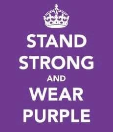
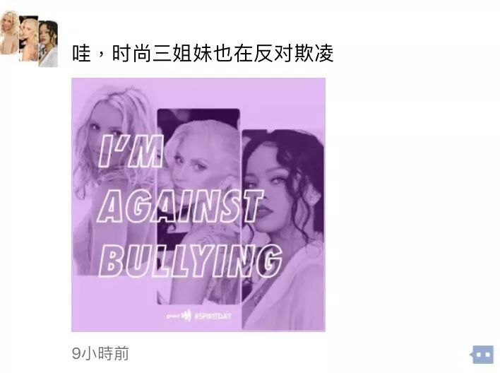
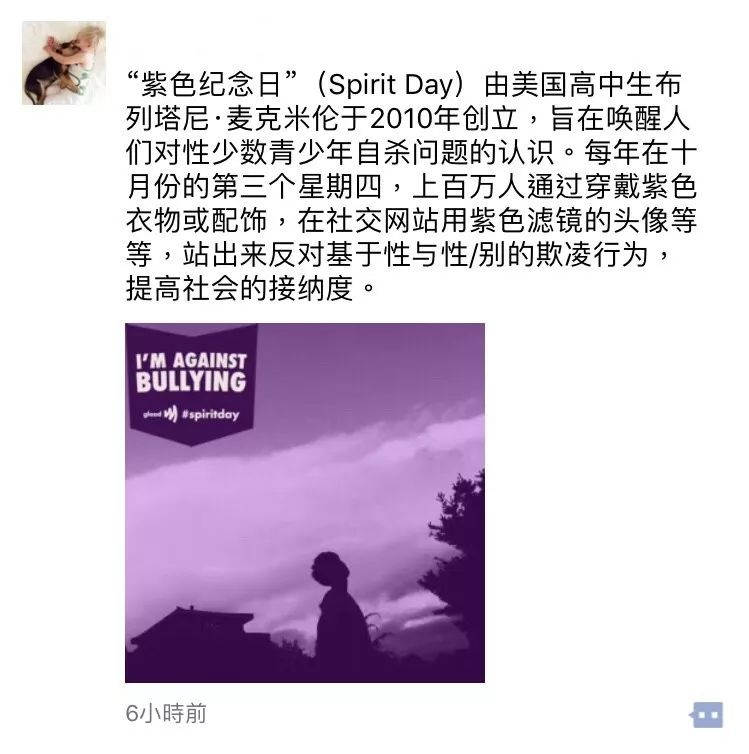
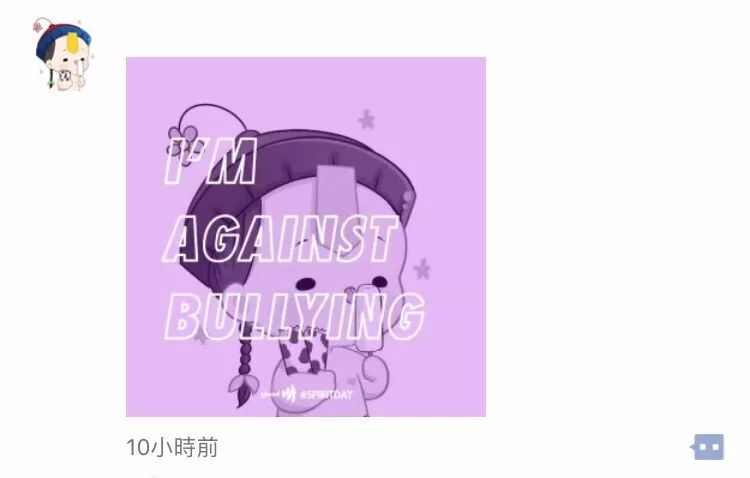
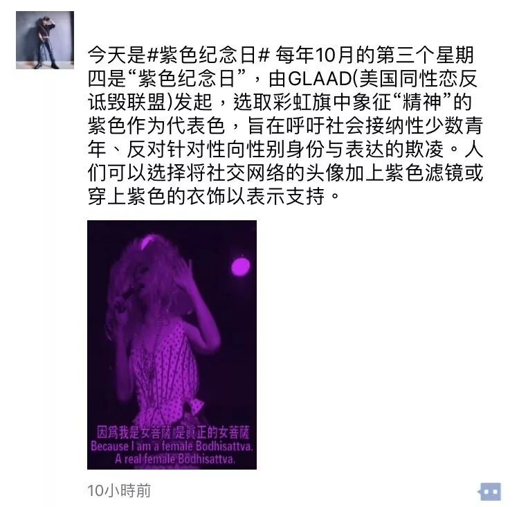
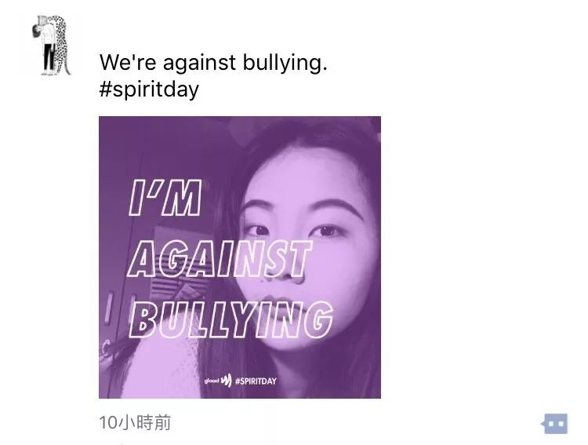

也许，如果你愿意听听她的故事 | 紫色校园日

在开始之前
要讲一个或许简单，或许普通的故事。
在小学最后的两年里，我面临着突如其来的排挤和孤立。校园内孤立他人的理由经常是“莫须有”的。我还记得当时小学四五年级，班上的男生们已经开始流行看一些所谓的小黄书（那是《斗破苍穹》类小说最流行的时候）。而我由于个子高挑，跟一群男生一起坐在后排。有好几次，我看见他们拿着一本封面花哨厚厚的书，几个人聚在一起捂着嘴偷笑，我好奇地打听，还借来看了原文。几个男生笑嘻嘻地看着我，而我在看完后却没有露出他们所期待的类似面红耳赤羞耻的神情。晚自习的电视课，放的电视剧有男女主角的吻戏，男生们一边看一边哄笑着，女生都捂住眼睛低着头，只有我没有低头也没有笑，然后我看到了周围男生的指指点点。一个在面对性与情爱不羞愧的女生，在他们眼里成了异类。后来有一次一个男生问我：“你是不是特别期待被男生抱在怀里这样那样啊？”就算我当时再不懂事，也听出了他话语背后的恶意。而在我表示对男生没有兴趣时，他们觉得难以置信且当作笑谈。
我不是一个胆小的人，小学也常会跟男生打架，但在这些事上却基本没有出言反驳过。不仅是因为我所受的教育没有告诉过我，男女生在面对性上的不同态度是否是正确的，还因为那一刻在这件事上，女生眼里的我不知廉耻像男生一样，男生眼里我是个“生来的荡妇”。这之后我有一个非常难听的绰号，叫“母猪”，无法抗议。
直到小学毕业我也没能将这个困境摆脱，更没有人帮助过我。很多时候，当我们是被霸凌者时，我们常常是孤立无援的，觉得自己什么都做不了。我不去谈论这件事对今天的我造成了什么样的影响，以证明校园霸凌的恐怖与恶意。霸凌这件事从一开始就已经是错的了，我们也不能够基于受害者所受影响的大小，来判定这种行为是否可以被谅解。
况且，困境从不会让我变得坚强，让我更坚强的是我自己。
而我知道，我不是个例，基于性与性别的校园暴力曾发生在许多人身上，发生在全世界各地的角角落落。但与曾经不同的是，现在我们可以重新选择，是选择继续沉默，还是做校园霸凌的反对者。不管你曾是霸凌者而心生后悔，还是被霸凌者而想努力改变，亦或者是旁观者而心存内疚，你都可以努力发声，让更多人看见，在今年的10.19紫色纪念日一起反对基于性与性别的欺凌，一起go purple！
如果你还不知道什么是紫色纪念日——

【什么是紫色纪念日】
“紫色纪念日”（Spirit Day）由美国高中生布列塔尼·麦克米伦于2010年创立，旨在唤醒人们对性少数青少年自杀问题的认识。在美国同性恋者反诋毁联盟（GLAAD）的推动下， “紫色纪念日”如今已经演变成了一场团结支持LGBT青少年的国际性活动。每年在十月份的第三个星期四，上百万人穿上紫色衣服、站出来反对针对同性恋、双性恋和跨性别儿童、青少年和青年人群的欺凌行为，提高人们对于多元性别和性倾向的儿童、青少年和青年人的接纳度。
“紫色校园”（Purple My School）是在“紫色纪念日”的基础上，由联合国教科文组织、联合国开发计划署以及亚洲同志项目共同发起的新的倡导活动，号召学生、教师和学校在“紫色纪念日”当天，通过穿戴紫色衣服、画紫色图片和制作紫色物品，表达对校园霸凌强烈谴责，为亚太地区的性和性别少数学生营造安全的空间。
【紫色校园日我们做些什么？】
在社交网站上使用紫色滤镜的头像
当天穿戴紫色衣物和配饰
参加自己或附近高校的紫色校园日活动
从身边开始和我们一起阻止校园霸凌倡导多元平等
......

【酷儿论坛今年做什么？】
酷儿论坛在
浙江大学（紫金港校区）
杭州师范大学（仓前校区）
浙江师范大学（金华）
都会有倡导活动
想要参加的小伙伴可以多多关注论坛公众号的动态
如果你无法到场参加我们的活动，你也可以在社交网络上支持我们！
比如，给头像换上紫色滤镜

（在应用商店搜索spirit day）
今年由于某种大家都知道的原因，微信头像无法更换了
于是我们的朋友们通过发布朋友圈和微博加入了声援




不管你是什么身份
都可以从这一天开始
反对针对性和性别少数学生的欺凌行为。
校园，因多元与平等而美丽
最后小小地预告一下
本周六晚在浙江大学紫金港校区
有关于校园欺凌的观影活动哦
请届时关注论坛公众号推送哦💗